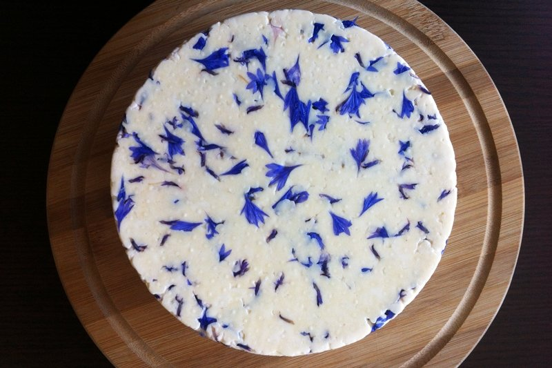
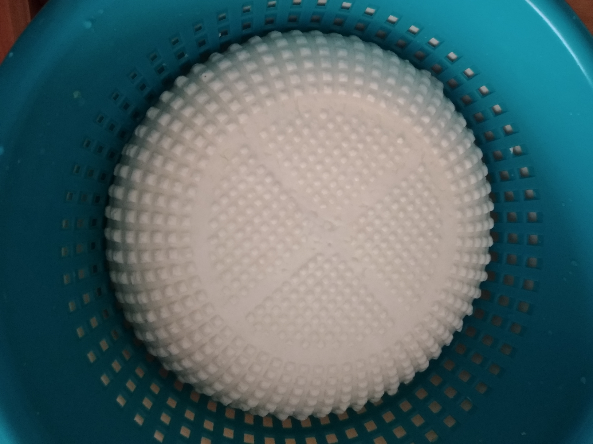
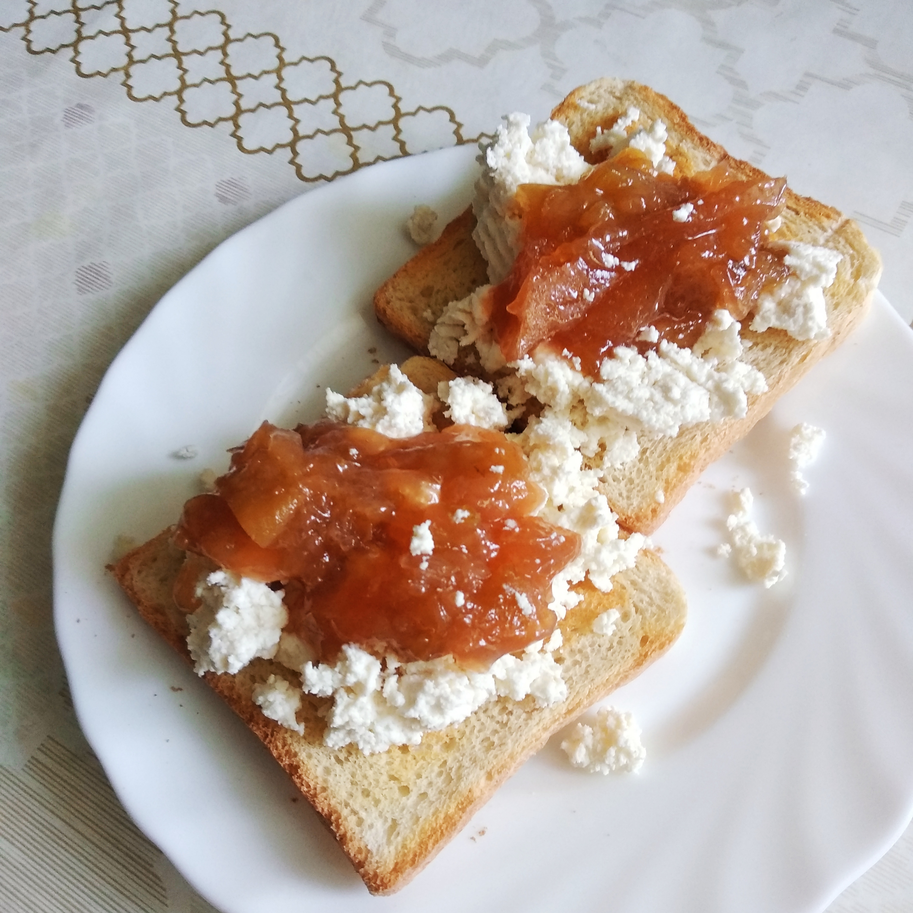
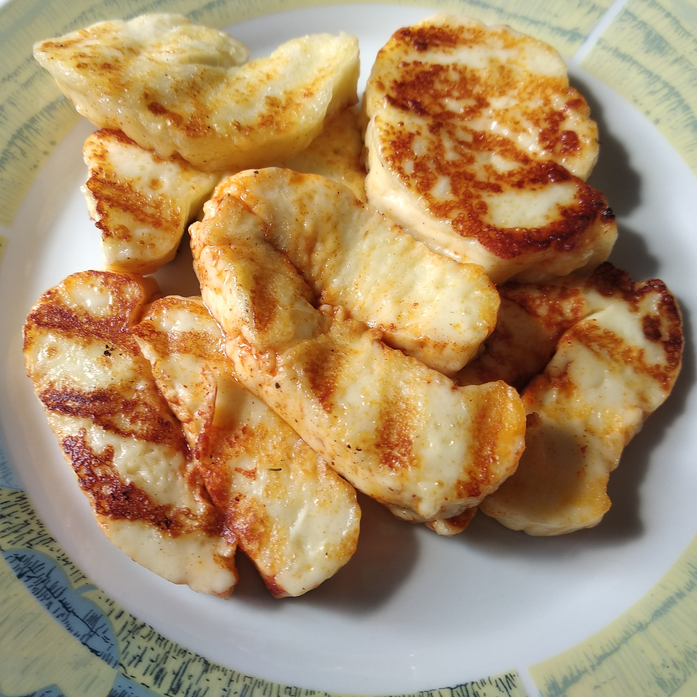
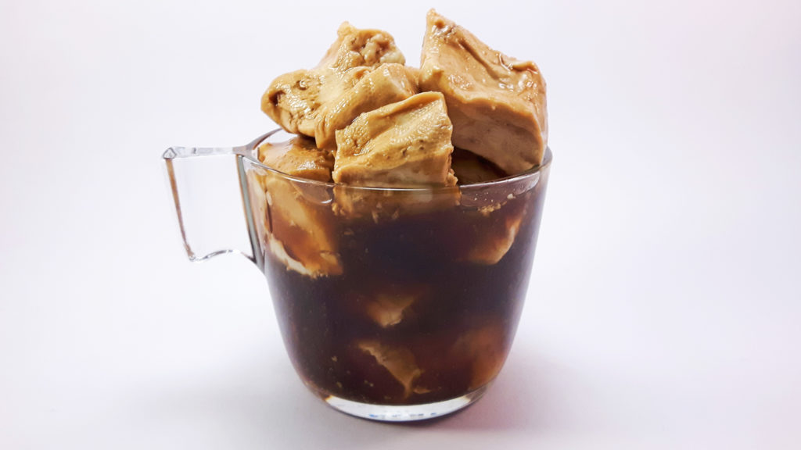
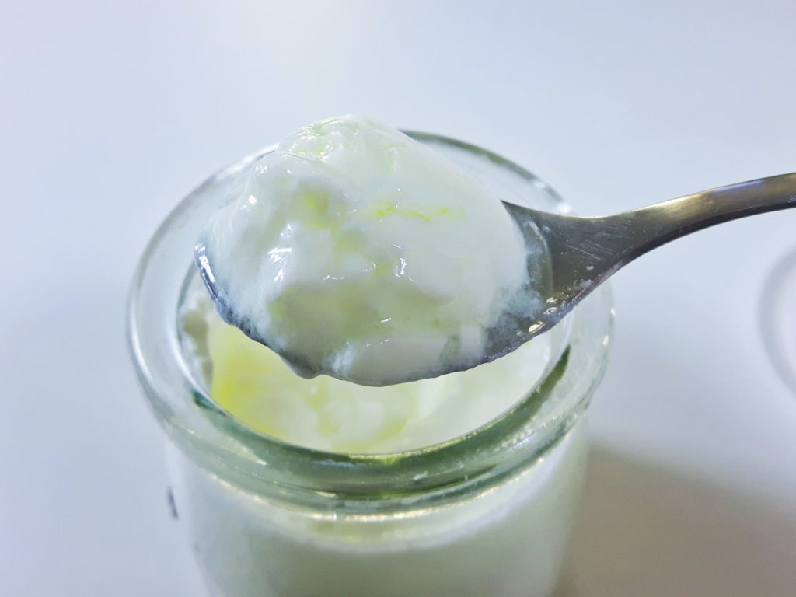
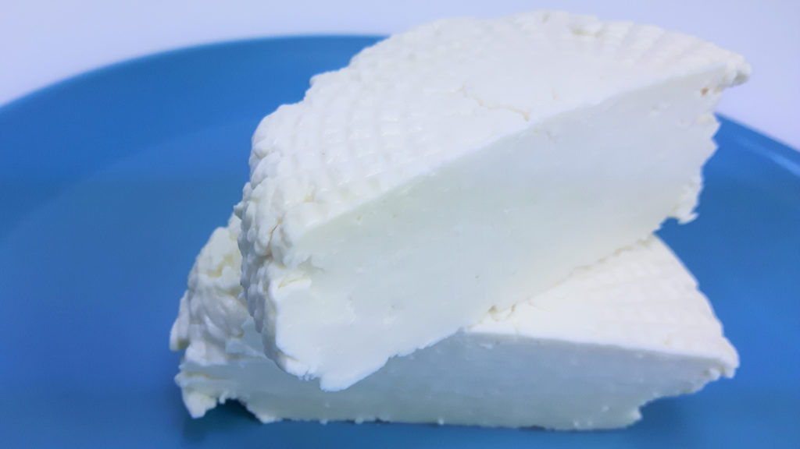

Nieżywięcin
Twój pierwszy ser podpuszczkowy. Naucz się robić sery zaczynając od tej receptury.

Korycin
Podobny do nieżywęcina.

Ricotta
Twarożek. Pyszny kremowy. Zrób po serze podpuszczkowym, czyli wykorzystaj ile się da.
Szampańska zabawa
Jeżeli chcesz naprawdę wykorzystać ile się da to jeszcze na koniec zrób szampana z serwatki. Zaszalej.Przepis nieprzetestowany!

Halloumi
Jeżeli nie masz wokół fanów korycina/nieżywęcina spróbuj halloumina. Z grila czy z patelni zachwyca większość!

Chongos Zamoranos
Meksykański deser z cynamonową nutą. Coś niespotykanego i ciekawego.Przepis nieprzetestowany!

Jogurt
Jeżeli masz ochotę na jogurt naturalny lub grecki, masz mleko i odrobinę jogurtu koniecznie spróbuj go rozmnożyć.Przepis nieprzetestowany!

Ser gruziński
Do chaczapuri jak znalazł. Proste i smaczne.Przepis nieprzetestowany!